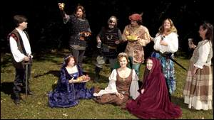

|
Chef returns for fourth command performance at Renaissance Feast By Teri
T. Thomason, Features Editor

A medieval feast will help get things started for the 18th annual Alabama Renaissance Faire to be held Saturday and Sunday, Oct. 23-24, in downtown-Florence. This is the 17th year for the feast, which will be Saturday, Oct. 16. Preparing for the feast are (seated, from left) Carol Burhans, Donna Miles,-Donna Montgomery; (standing, from left) Lee Freeman, Paul Daniel, John Iaria, William Freeman, Ann Iaria and Perri Scott. DANIEL GILES/TimesDaily One look at Jim Matterer's Web site, www.godecookery.com, and it's obvious that this guy is really into medieval and Renaissance food. "I love it," said Matterer, who is also known in Renaissance circles as Master Huen Damebrigge of Wychwood. It was, in fact, Matterer's Web site that brought the expert in medieval cookery to the attention of the Roundtable, the steering committee of the Alabama Renaissance Faire in Florence. "Lee Freeman found him on the Internet," said Billy Ray Warren, Roundtable chairman. "We invited him to prepare our feast in 2001, and this will be his fourth visit to Florence. We have designated him as the premier chef of the Alabama Renaissance Faire." Matterer's Web site posts photos and menus from his first three visits to Florence and keeps visitors informed of what will be taking place at the Alabama Renaissance Faire this year. "He is very proud of his Florence experience," Warren said. "He really knows how to do an authentic feast." Combined training Matterer received his culinary training from a small community college. It wasn't until later, however, that his interests focused on medieval food. "I decided to return to college and major in history," he said. "In the '90s, I decided to combine the history and love of cooking and do serious research." It was the research that led Matterer to design his Gode Cookery Web site, which includes "A Boke of Gode Cookery Recipes," along with other helpful links such as a glossary of Medieval Cooking Terms for those of us not so familiar with the world of Renaissance cookery. His cooking skills have also brought him national television attention. "I appeared on the Food Network earlier this year," he said. Matterer is also known for his medieval cookies -- Goode Cookys -- that he sells through his Web site. "I'll be selling them at the faire," he said. "They're very big cookies -- about 4 inches across and very detailed." Matterer's explains on his site that during the Middle Ages and Renaissance, small cakes or wafers were the predecessors of modern cookies. Many of the cakes were created in a variety of shapes, sizes and designs, produced by hand-carved molds that depicted images of saints, elements of daily life and period patterns and motifs. In this tradition, Goode Cookys are handmade from historical molds and bring to life the elaborate and decorative cakes, wafers and gingerbread of the Middle Ages. At the feast, Matterer will be distributing platters of six different kinds of cookies in six different flavors. "I'm hoping people will keep those more than eat them," Matterer joked. Coming home Matterer, who lives in Pennsylvania, said returning to Florence for his fourth year is almost like coming home. "I consider Florence as a second home," he said. "In fact, I come a week early to see friends and hang out with the Roundtable." The medieval cookery master said Florence is unique when it comes to Renaissance faires. "This is the only faire that I know of that does a sit-down feast like this," Matterer said. For the feast, has put together an impressive menu, that will include paynedemayne, buttir, sallet, Broet d'Almaniz, garroites, benes yfryed, chike endored, Minnesanger wafer, champignons, Beuf Comme Venoison d'Ours, amplummus and gauffres. For those who don't understand Middle English text, here's the translation: Payndemayne -- white bread. Buttir -- butter. Sallet -- salad of various lettuces, herbs and fruits. Broet d'Alamaniz -- German broth, which is a chicken and pork soup made with almond milk and spices. Garrorites -- Carrots cooked in honey. Benes yfryed -- Fava beans, onions and garlic browned in olive oil and spices. Chike endored -- Roast chicken in a golden egg glaze. Minnesanger wafer -- A molded cake or wafer. Champignons -- Mushrooms and cheese. Beuf Comme Venoison d'Ours -- "Beef to taste like bear," which further translates into roast beef accompanied with a black pepper sauce. Amplummus -- Fried apples in cream, eggs, cinnamon and sugar. Gauffres -- Cakes and wafers. Delicious and entertaining While food is the center of attention for the Renaissance Feast, entertainment also plays a big role. "We're going to have a jolly time this year," said Donna Miles of the Roundtable. Performing will be troupes with musical instruments representative of the Middle Ages, David Hope as a storyteller, songs by Sir William the Great (William Freeman), authentic Renaissance dancers and bellydancers. Also performing will be Sadie the Magic Dog. "Sadie is a black lab who owns Debbie Collum," said Miles. "Sadie is a registered therapy dog and she's going to be doing tricks for us." Tickets available Warren advises feastgoers to purchase their tickets, early as seating will be limited to 200. Tickets for the feast, which begins at 7 p.m. Saturday, Oct. 16, are $20 each. They are available at Anderson's Bookland and Kennedy-Douglass Center for the Arts. In conjunction with the feast and faire, a costume-making clinic will be held from 9 a.m. until 2 p.m.-Saturday. The clinic is free, and attendees are asked to bring 3 yards of 60-inch-wide material. "You actually walk away with a finished tunic," Warren said. The following recipes are from Matterer's Web site Clarrey was wine to which honey and spices were added; the name comes from the Latin vinum claratum, which means "clarified wine." The name survives today as claret, a dry, red wine. CLARREY Description: Wine mulled with honey and spices
After sitting, the spices will create at thick residue, which will settle to the bottom. Using a ladle, pass the wine into another container through a strainer lined with two or three layers of cheesecloth to remove the spices, being careful to leave as much of the spice reside in the pot as possible. Bottle. Make at least one month before serving. BRYNDONS Description: Small cakes in sauce of wine, fruit and nuts
In a separate bowl, mix together the flour, sugar and salt. Dye the water yellow with a few drops of coloring, then slowly work into the flour enough of the water to make a smooth dough, similar to pie-pastry. Roll out on a floured board, then cut in strips about 1-inch wide and 4 inches long. In a deep skillet or pan, fry the strips in oil until lightly browned and very crisp. Drain. Place the cakes on a serving platter, then spoon on the fruits and nuts, being generous with the syrup. The yellow cakes and the red topping make an interest contrast in colors and the wine will soften the cakes. Makerouns appear to the the ancestor of macroni and this dish may best be described as "medieval mac-n-cheese." The period receipt advises to prepare it like "losyns" (lasagna) with layers of noodles, butter and cheese. Matterer says cheddar cheese is the tastiest, but advises to try other varieties. MAKEROUNDS Description: A dish of noodles and cheese
Serve as is or continue adding layers of butter, cheese and noodles. Use extra cheese as necessary. Serve immediately or place in a hot oven for several minutes and then serve. Serves 8. GYNGERBREDE Description: A sweet honey confection
Garnish each square by sticking a whole clove in the top center. Option: Add a few drops of red food coloring when adding the spices, "If thou wolt haue it Red." Teri Thomason can be reached at 740-5742 or
teri.thomason@ timesdaily.com.
This page © 2005 Gode Cookery http://www.godecookery.com
|

BACK TO: Alabama Renaissance Faire
A Boke of Gode Cookery Alabama
Renaissance Faire
Alabama
Renaissance Faire
© James L. Matterer
Please visit The Gode Cookery Bookshop